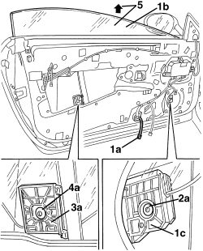

7005D14 FRONT SIDE DOOR DESCENDING WINDOW GLASS - R.R. WITH DOOR PANEL (AND SUPPORT FRAME) REMOVED
- Path
- Procedures > 70 FITTINGS > 7005 PASSENGER COMPARTMENT FRONT SIDE DOORS > 7005D FRONT DOOR WINDOW GLASSES > 7005D14 FRONT SIDE DOOR DESCENDING WINDOW GLASS - R.R. WITH DOOR PANEL (AND SUPPORT FRAME) REMOVED
- Kind
- repair procedure (removal / refitting; the operation number is the code)
- Applies to
- all engines; all production periods
- Interactive page
- https://sloeber94.github.io/elrnDB-aBrrSpdr/en/#/946002508
Applies to: all engines; all production periods
 Removing
Removing
 Refitting
RefittingOp. 7005A04 FRONT SIDE DOOR WATER GUARD PROTECTION - R.R. OR POSITION WITH DOOR PANEL REMOVED
Op. 5570T90 FRONT SPEAKER (ONE), LEFT OR RIGHT - R.R
1. Provisionally connect the window switch unit to the connection (1a), then move descending glass (1b) until the glass retainer (1c) is in an accessible position (as in the figure).
2. Undo the bolt (2a) and disconnect front retainer (1c) from the glass.
3. Raise descending glass (1b) further to move glass rear retainer (3a) into a position of access (as shown in the figure).
4. Undo the bolt (4a) and disconnect rear retainer (3a) from the glass.
5. Raise the window by hand and remove.

Applies to: all engines; all production periods
Refitting
Removing- Check the condition of the window.
- Insert the glass in its compartment carefully and lower it before attaching to the retainers.
- Screw in the retaining bolts and tighten provisionally.
- Adjust the window.
Op. 5570T90 FRONT SPEAKER (ONE), LEFT OR RIGHT - R.R
Op. 7005A04 FRONT SIDE DOOR WATER GUARD PROTECTION - R.R. OR POSITION WITH DOOR PANEL REMOVED
Topics linked from this page (3)
- 5570T90 FRONT SPEAKER (ONE), LEFT OR RIGHT - R.R
- 7005A04 FRONT SIDE DOOR WATER GUARD PROTECTION - R.R. OR POSITION WITH DOOR PANEL REMOVED
- 7005D11 LOWERING WINDOW (ONE), LEFT OR RIGHT FOR FRONT SIDE DOOR - CHECK SLIDING - INCLUDES POSITIONING GUIDES, POSITIONING AND FASTENING WINDOW SUPPORT TO CONTROL
Topics that link to this page (4)
- 7005D15 FRONT SIDE DOOR DESCENDING WINDOW GLASS (ONE) LEFT OR RIGHT - R.R
- 7005D26 FRONT SIDE DOOR DESCENDING WINDOW GLASS SCRAPER (OUTER) (ONE), LEFT OR RIGHT- R.R
- 7005D29 FRONT CHANNEL/SEAL FOR FRONT SIDE DOOR LOWERING WINDOW GLASS (ONE), LEFT OR RIGHT - R.R.
- 7005M26 ELECTRIC WINDOW MECHANISM FOR ONE FRONT DOOR LH OR RH - R.R